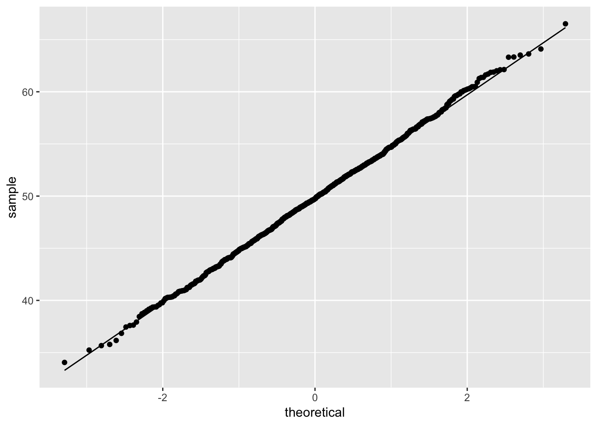
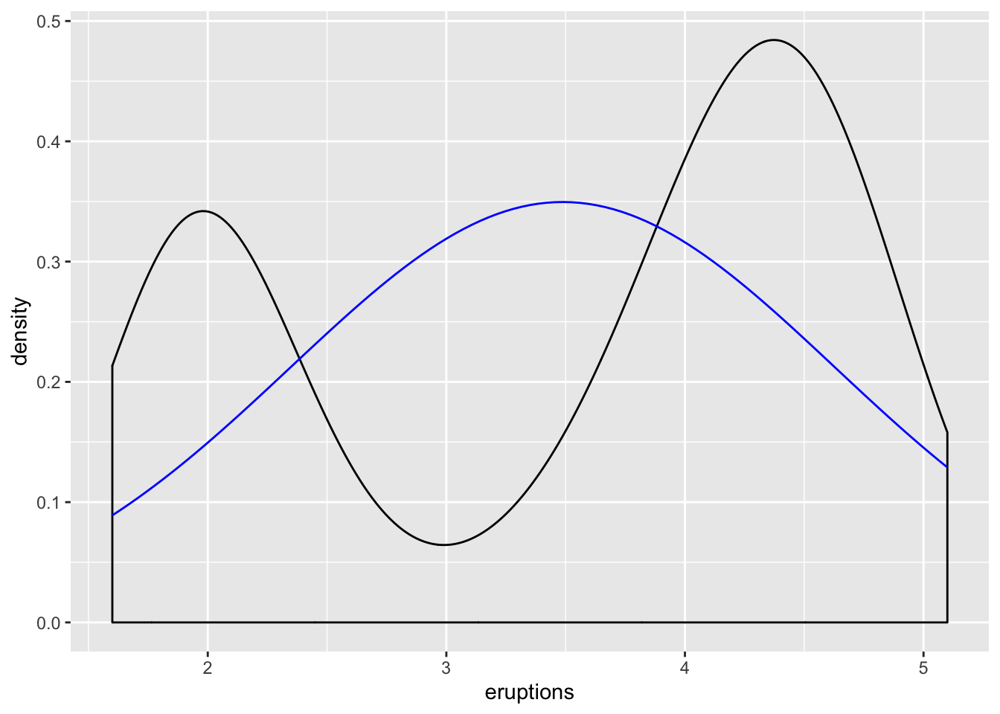
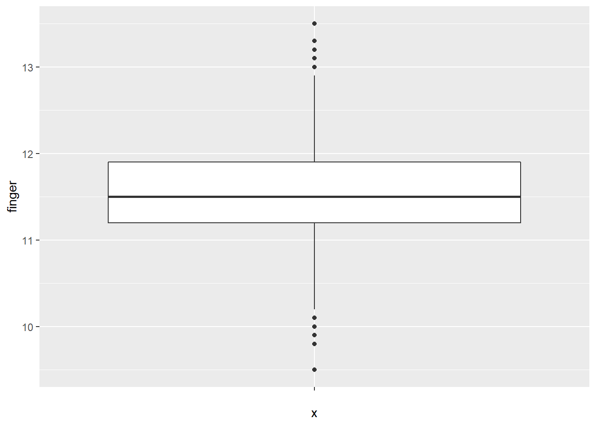
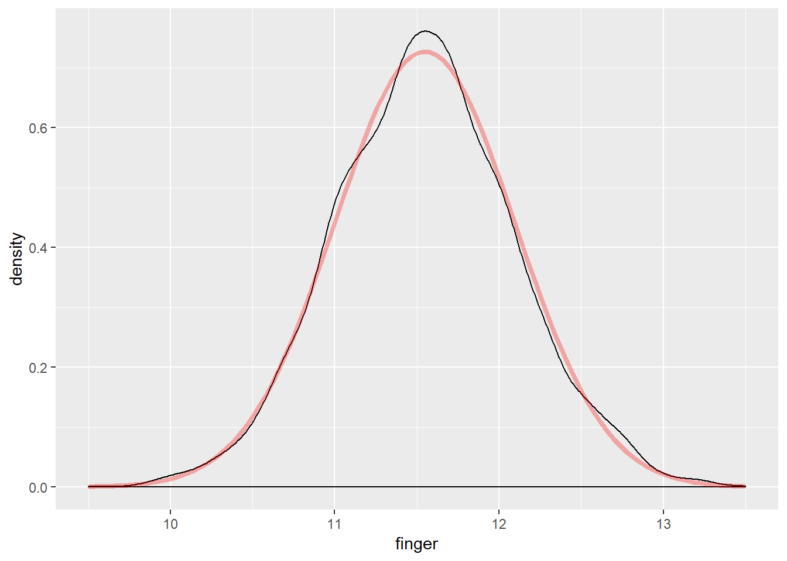
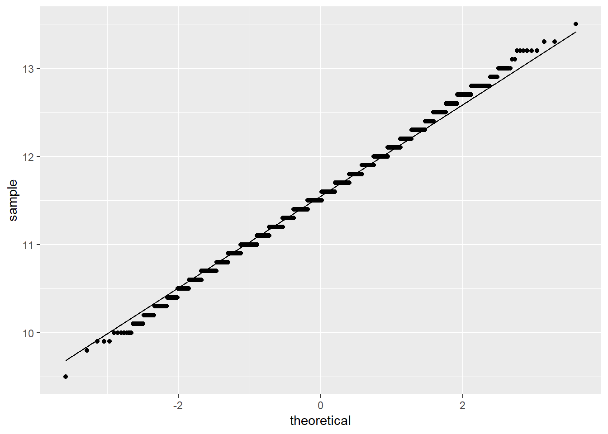

5 Foundations for Inference
This lab introduces the tools for the foundation of inference by examining the normal distribution, standard errors, confidence errors, and single sample t-tests. The following packages are required:
- car
- psych
- sm
- HistData
- tidyverse
5.1 Testing for Normality
Lab three introduced the basics of normal distributions. Much of the statistical work done is built on the condition of data that follows a normal distribution. Inspecting data for normality is done via numerous methods.
Recall the rnorm() function to generate random values that follow a normal distribution given specified parameters. The following random object will consist of 1000 random values given \(\mu\) = 50 and \(\sigma\) = 5:
random <- rnorm(1000, mean = 50, sd = 5)Visualizing data is an important first step to inspecting data for normality. The previous lab introduced density plots, box plots, and QQ plots as means of visualizing data and their relationships to a normal distribution. Recall that the QQ plot graphs the quantiles of data against quantiles of a normal distribution, given the \(\mu\) and \(\sigma\) of the data.
ggplot(as.data.frame(random), aes(sample = random)) +
stat_qq() +
stat_qq_line()
The QQ plot of the random object demonstrates the data closely follows a normal distribution. This is expected given the random object was created via the rnorm() function. Note: Visualizing data for normality is an informal approach to inspecting for normality. Various empirical methods exist to test whether data follows a normal distribution, the most popular of which are:
- Shapiro-Wilk test
- Anderson-Darling test
- Kolmogorov-Smirnov test
- Pearson’s Chi-Squared test
The Shapiro-Wilk test is the most popular method, as the test has been demonstrate as providing the most power for a given significance.
5.1.1 Shapiro-Wilk Test
The shapiro.test() function in R employs the Shapiro-Wilk test on data to test whether the data are normally distributed. Use of the Shapiro-Wilk test is contingent on univariate and continuous data. The hypotheses for the Shapiro-Wilk test are:
\(H_0\): The data are normally distributed
\(H_1\): The data are not normally distributed
Note: The Shapiro-Wilk test for normality is a statistical test that provides a p-value of the test statistic, W. This lab will focus on the p-value approach for statistical tests, using an \(\alpha\) value of 0.05 as the desired significance level.
shapiro.test(random)##
## Shapiro-Wilk normality test
##
## data: random
## W = 0.99908, p-value = 0.9133The Shapiro-Wilk test p-value is greater than \(\alpha\) = 0.05, therefore failing to reject \(H_0\) concluding the data are normally distributed. Again, this is expected given the random object was created via the rnorm() function.
5.1.2 Testing Normality
R provides data pertaining to Yellowstone National Park’s Old Faithful geyser in the faithful object. Old Faithful eruptions are recorded as duration, in minutes, between events. First, the describe() function provides valuable information for the eruptions variable in the faithful object.
describe(faithful$eruptions)## vars n mean sd median trimmed mad min max range skew kurtosis
## X1 1 272 3.49 1.14 4 3.53 0.95 1.6 5.1 3.5 -0.41 -1.51
## se
## X1 0.07Comparing the eruptions data to a normal distribution, given \(\mu\) and \(\sigma\) from the eruptions data, is available via the geom_density() and stat_function() functions.
ggplot(faithful, aes(eruptions)) +
geom_density() +
stat_function(fun = dnorm, args = list(mean = mean(faithful$eruptions),
sd = sd(faithful$eruptions)), color = "blue")
The black line represents the eruptions data, and the blue line represents the normal distribution given the \(\mu\) and \(\sigma\) values of eruptions. Note: The eruptions data appears bimodal, and does not fit the normal distribution model given the parameters calculated via the eruptions data.
The eruptions data is further examined using QQ plots via the qqPlot() function:
ggplot(faithful, aes(sample = eruptions)) +
stat_qq() +
stat_qq_line()
Most of the points in the QQ plot fall outside the region defined by the dashed lines, further suggesting the eruptions data is likely not normally distributed. Lastly, a Shapiro-Wilk test can confirm whether the eruptions data is normally distributed:
shapiro.test(faithful$eruptions)##
## Shapiro-Wilk normality test
##
## data: faithful$eruptions
## W = 0.84592, p-value = 0.0000000000000009036The Shapiro-Wilk test p-value is less than \(\alpha\) = 0.05, leading to reject \(H_0\): data are normally distributed. In conclusion, the eruptions data is not normally distributed. Note: The visual plots are likely enough to confirm the eruptions data are not normally distributed.
The MacdonellDF variable within the HistData package consists of finger length data. Again, visualizing the data for normality is performed via various methods. A box plot is generated for the MacdonellDF data:
ggplot(MacdonellDF, aes(x = "", y = finger)) +
geom_boxplot()
The box plot appears balanced, indicating normality. Generating a density plot should show the distribution of MacdonellDF variable as similar to the projected normal distribution given the \(\mu\) and \(\sigma\) parameters of the MacdonellDF variable.
ggplot(MacdonellDF, aes(finger)) +
geom_density() +
stat_function(fun = "dnorm", args = list(mean = mean(MacdonellDF$finger),
sd = sd(MacdonellDF$finger)),
color = "red", size = 1.5,
alpha = .3)
Additionally, a QQ plot:
ggplot(MacdonellDF, aes(sample = finger)) +
stat_qq() +
stat_qq_line()
The visualizations all suggest the data is normally distributed; however, a Shapiro-Wilk test is still useful to test for normality.
shapiro.test(MacdonellDF$finger)##
## Shapiro-Wilk normality test
##
## data: MacdonellDF$finger
## W = 0.99646, p-value = 0.000001666Note: Despite the visualizations suggesting normality, the Shapiro-Wilk test p-value is less than \(\alpha\) = 0.05, resulting in rejecting the null hypothesis that the data are normally distributed. A closer examination of the QQ plot yields that most points exist outside the region, though at first glance nothing appears suspect. This merits a conversation on judgment for assessing whether the data could be treated as normally distributed.
5.2 Standard Errors
Recall that the standard error is the standard deviation of the sample distribution, calculated as the square root of the standard deviation divided by the square root of the sample size.
- Population: \(\frac{\sigma}{\sqrt{n}}\)
- Sample: \(\frac{s}{\sqrt{n}}\)
R does not provide a single purpose function to calculate the standard error. As a result, the following demonstrates the previous formula to calculate the standard error:
sd(ds$age, na.rm = T)/sqrt(length(ds$age) - sum(is.na(ds$age)))## [1] 0.2815446Alternatively, the describe() function includes the standard error statistic for a given variable, as follows:
describe(ds$age)## vars n mean sd median trimmed mad min max range skew kurtosis
## X1 1 2547 60.37 14.21 62 61.01 13.34 18 99 81 -0.39 -0.24
## se
## X1 0.28Note: The previous two methods return the same result.
5.3 Confidence Intervals
The standard error is vital to inferential statistics. For example, the standard error is required to calculate confidence intervals. Confidence intervals employ standard error to assist with inferring information from a sample of a larger population, through inclusion of uncertainty.
Confidence intervals synthesize knowledge of standard error and z-scores. Recall that with the normal distribution, a z-score standardizes standard deviations values are from the mean. To calculate a level of confidence (90%, 95%, 99%), the z-score associated with those levels of confidence is necessary:
- 90% confidence = 1.645
- 95% confidence = 1.960
- 99% confidence = 2.576
The formula for confidence level is:
\[CI=\bar{x} \pm z\frac{s}{\sqrt{n}},\] or
\[CI=\bar{x} \pm z*SE\]
Put simply, the confidence interval is the sample mean plus/minus the product of the z-score and standard error.
Using the age variable within the ds data set, the a 95% confidence interval is calculated as follows:
First calculate the mean:
mean(ds$age, na.rm = T)## [1] 60.36749Second, find the standard error:
describe(ds$age)$se # this is a way to pull the standard error out without having to look at everything else## [1] 0.2815446Given a 95% confidence interval, the z-score is 1.96. The upper bound of the confidence interval is calculated as follows:
60.38 + 1.96 * 0.28## [1] 60.9288The lower bound of the confidence interval is calculated as follows:
60.38 - 1.96 * 0.28## [1] 59.8312With 95% confidence, the population mean of age is between 59.83 and 60.93 (rounded).
Increasing confidence will increase the interval of the confidence interval. For example, the z-score associated to 99% is 2.58, so the confidence interval for 99% is calculated as follows:
age.se <- describe(ds$age)$seNote: The standard error of the age variable was stored as to the age.se object via specifying only to return the standard error from the describe() function. Using the se object simplifies the confidence interval calculation as exemplified:
mean(ds$age, na.rm = T) + 2.58 * age.se## [1] 61.09388mean(ds$age, na.rm = T) - 2.58 * age.se## [1] 59.64111With 99% confidence, the population mean of age is between 59.64 and 61.09. This interval is larger than the interval calculated for 95% confidence.
Alternatively, the t.test() function in R provides the 95% confidence interval for a given variable.
t.test(ds$age)##
## One Sample t-test
##
## data: ds$age
## t = 214.42, df = 2546, p-value < 0.00000000000000022
## alternative hypothesis: true mean is not equal to 0
## 95 percent confidence interval:
## 59.81541 60.91957
## sample estimates:
## mean of x
## 60.36749The results of t.test() is similar to the manual calculations performed previously. By default, the t.test() tests whether \(\mu\) for the variable is equal to zero. The hypotheses for the t.test() function are:
- \(H_0: \bar{x} = \mu\)
- \(H_1: \bar{x} \neq \mu\)
Note the returned p-value of the previous t.test() performed is less than \(\alpha\) = 0.05; therefore, the null hypothesis is rejected. That is, given the sample data, with 95% confidence the \(\mu\) is not zero.
To explain a different way, using the same variable, but with a defined \(\mu\) of 50, the t.test() function can test whether \(\mu\) is 50.
t.test(ds$age, mu = 50)##
## One Sample t-test
##
## data: ds$age
## t = 36.824, df = 2546, p-value < 0.00000000000000022
## alternative hypothesis: true mean is not equal to 50
## 95 percent confidence interval:
## 59.81541 60.91957
## sample estimates:
## mean of x
## 60.36749The same result occurs: the null hypothesis is rejected. Once again, the t.test() function is employed to test whether \(\mu\) = 60:
t.test(ds$age, mu = 60)##
## One Sample t-test
##
## data: ds$age
## t = 1.3053, df = 2546, p-value = 0.1919
## alternative hypothesis: true mean is not equal to 60
## 95 percent confidence interval:
## 59.81541 60.91957
## sample estimates:
## mean of x
## 60.36749The result differs, such that the null hypothesis is not rejected as the p-value is greater than \(\alpha\) = 0.05. That is, with 95% confidence, \(\mu\) = 60.
Note: The p-values can be calculated manually from z-scores to test population means using confidence intervals. This requires:
- Calculate \(\bar{x}\)
- Calculate confidence intervals (as previously shown)
- Calculate the p-value associated with \(H_0\)
Objects are employed to simplify the calculation:
xbar <- mean(ds$age, na.rm = T)
a <- 60
s <- sd(ds$age, na.rm = T)
n <- 2547The p-value for if the population mean \(\neq\) 60:
2 * (1 - pnorm(xbar, mean = a, sd = s/sqrt(n)))## [1] 0.1918016The p-value of 0.191 is greater than \(\alpha\) = 0.05; therefore, failing to reject \(H_0\): \(\mu\) = 60.
5.4 More on Single Sample T-tests
The previous confidence interval section introduced a preliminary discussion of t-tests. The Student’s t distribution is based on sample estimates, whereas the normal distribution is used when \(\sigma\) and \(\mu\) are known.
Performing a t-test requires:
- n
- s
- \(\bar{x}\)
- t statistic
To demonstrate, the following tests whether the population mean is 58 for the given data by defining the above parameters:
nAge <- length(ds$age) - sum(is.na(ds$age))
sdAge <- sd(ds$age, na.rm = TRUE) # Standard deviation of age
seAge <- sdAge/(sqrt(nAge)) # Standard error of age
meanAge <- mean(ds$age, na.rm = TRUE)To calculate the t statistic, the population mean is subtracted from the sample mean, and divided by the standard error as follows:
t_value <- (meanAge - 58)/seAge
t_value## [1] 8.408938To calculate the two-sided p value under the t distribution:
2 * (1 - pt(abs(t_value), df = nAge - 1))## [1] 0The returned p-value is less than \(\alpha\) = 0.05, rejecting \(H_0\): \(\mu\) = 60. Put another way, \(H_1\):
\(\mu \neq 60\).
t.test(ds$age, mu = 58)##
## One Sample t-test
##
## data: ds$age
## t = 8.4089, df = 2546, p-value < 0.00000000000000022
## alternative hypothesis: true mean is not equal to 58
## 95 percent confidence interval:
## 59.81541 60.91957
## sample estimates:
## mean of x
## 60.36749With 95% confidence, \(\mu \neq 60\)